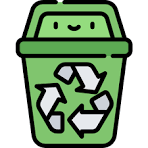

Inicio
EL DUENDE DEL JARDÍN:
EL CUIDADO DE LA NATURALEZA
(Creado por Hiruweb para la asociación Bakuva)
(EL MUNDO ESTÁ EN MANOS DE LOS NIÑOS...LOS FUTUROS PADRES)
Objetivos
OBJETIVOS:
DESCUBRIR EL PLACER DE LA LECTURA.
CUIDAR LA NATURALEZA Y EL ENTORNO.
Temporalización
Asamblea el día 17 de mayo por ser el día internacional del reciclaje.

CONTENIDOS:
- LIMPIEZA Y ORDEN EN EL ENTORNO
- IDENTIFICACIÓN DE LOS PERSONAJES DEL CUENTO.
- VOCABULARIO MEDIOAMBIENTAL.
- DRAMATIZACIÓN.
EL DUENDE DEL JARDÍN
“Érase una vez un duende invisible llamado Ezequiel que vivía en un jardín. Ezequiel dormía durante el día y por la noche cuidaba el parque: con tijeras pequeñas cortaba el césped con cuidado; con una cuchara regaba las flores gota a gota y, para que crecieran más, cantaba a cada flor una bonita canción. Así cuando llegaban los abuelos, los niños/as y los perros por las mañanas, se encontraban un jardín precioso.
Pero todos pensaban que el jardín se cuidaba solo, ¡qué despistada es la gente! Unos tiraban papeles al suelo, los perros hacían pipí en las flores y los niños/as corrían sin mirar destrozando las plantas al pasar.
Cuando Ezequiel se levantaba…¡vaya susto se llevaba!
- ¡Bfffff! Mirad mis flores, ¡qué desastre, cuánto trabajo!- se lamentaba todas las noches.
Ezequiel trabajaba tanto que un día, cansado de que nadie le ayudara, decidió irse de vacaciones con su primo, el duende Ataulfo. Al no estar el duende, nadie limpiaba el parque por la noche. Cada día, los niños/as, los abuelitos y los perros se encontraban el jardín más sucio. No podían pasear ni jugar, así que no les quedó más remedio que limpiarlo. Hicieron grupos de tres: un niño/a, un abuelo y un perro. Se encargaban de que todos trataran bien el jardín y no lo ensuciaran.
Cuál fue la sorpresa de Ezequiel cuando, al volver de la playa con su camisa de flores, encontró el jardín limpio y cuidado. Por fin las personas se habían dado cuenta de que si no se cuida la naturaleza tampoco se puede disfrutar de ella.”
- ¿Cómo se llamaba el duende?
- ¿Creéis que es importante cuidar la naturaleza?
- ¿Cómo se sintió el duende?
- ¿Qué harías tú?
- ¿Cuidas el medio ambiente?
- Contad con vuestras palabras el cuento.
Lectura fácil
HABÍA UN DUENDE INVISIBLE LLAMADO EZEQUIEL QUE VIVÍA EN UN JARDÍN. ÉL CUIDABA EL JARDÍN POR LA NOCHE, CORTABA EL CÉSPED, REGABA LAS FLORES Y LES CANTABA PARA QUE CRECIERAN MÁS BONITAS. PERO LA GENTE PENSABA QUE EL JARDÍN SE CUIDABA SOLO.
UN DÍA, EZEQUIEL SE CANSÓ DE TRABAJAR SOLO Y DECIDIÓ TOMAR VACACIONES. SIN ÉL, EL JARDÍN SE ENSUCIÓ. LOS NIÑOS, LOS ABUELOS Y LOS PERROS LO VIERON TODO SUCIO Y DECIDIERON LIMPIARLO JUNTOS.
CUANDO EZEQUIEL VOLVIÓ, SE SORPRENDIÓ AL VER EL JARDÍN LIMPIO. LA GENTE FINALMENTE ENTENDIÓ QUE DEBÍAN CUIDAR LA NATURALEZA PARA DISFRUTARLA.
Cuento en pictogramas

ACTIVIDADES:
- RECICLAR LA BASURA EN CLASE
(Fuente: elaboración propia)
(FABRICAMOS LOS CONTENEDORES DE PLÁSTICOS Y PAPEL EN LA CLASE PARA QUE APRENDAMOS A UTILIZARLOS)
- HACER DIBUJOS DE COSAS QUE SE PUEDEN HACER PARA CUIDAR LA NATURALEZA

(Fuente: elaboración propia)
- HACER EXPERIMENTOS EN CLASE
(Fuente: elaboración propia)
(PLANTAMOS LENTEJAS EN CLASE: ¡QUÉ DIVERTIDO!)
CUIDAMOS NUESTRO PLANETA...
¡EL PLANETA AZUL!
(Contenidos propios bajo licencia Creative Commons (CC) 1995-2013 Color vivo.
METODOLOGÍA
TIENEN UN ENFOQUE GLOBALIZADOR, BASADO EN EL JUEGO Y EL APRENDIZAJE AUTÓNOMO.
TIPOS DE LICENCIAS
Tipo de licencia del recurso: Universal BY NC SA

Esta obra esta bajo una licencia" Creative Commons Attribution-NonCommercial-ShareAlike 4.0 International License.
Otros autores Nieves Alba González
Ficha interactiva de Elena Rodríguez/ Educación Infantil (1061912) Tema principal: Reciclaje (2005912).
Ficha interactiva de Yuliana Azeneth Rubio Rocha. Asignatura: Exploración y comprensión del mundo (1282655). Tema principal: Conoce acciones para reciclar (1309973).
Ficha interactiva de Merce García Leal Asignatura: Educación Infantil (1061912). Tema principal: Reciclaje (2005912).
Autor de pictogramas: Sergio Palao Procedencia: ARASSAC Licencia: CC (BY-NC-SA)
Project-Id-Version: eXeLearning 2.8.1Report-Msgid-Bugs-To: eXe Translations